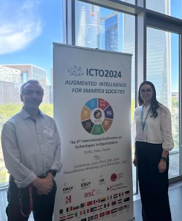

Salut, je suis Dounia üëã
üéÇ J'ai 22 ans
üìç Je viens de Paris
üéì Je suis √©tudiante en ing√©nierie, passionn√©e par le d√©veloppement web, la data et l'intelligence artificielle.
Je souhaite mettre à profit mes compétences pour aider les entreprises à optimiser leurs processus, améliorant ainsi leur efficacité et leur productivité.

A propos

C'est ici que tout a commencé, lorsque j'ai intégré une classe préparatoire aux grandes écoles. J'ai d'abord suivi la spécialité MPSI - Mathématiques, Physique et Sciences de l'Ingénieur, avant de poursuivre en MP.
Le rythme, bien plus intense qu'au lycée, m'a poussée à me surpasser. Aujourd'hui, je suis très fière de ce parcours !
Par la suite, j'ai intégré l'ESILV, une superbe école d'ingénieurs. J'y ai choisi la spécialité en Data et Intelligence Artificielle et j'ai eu l'opportunité de faire partie des étudiants-chercheurs de l'établissement.
Mes centres d'intérêts !
Dans cette rubrique, je vous invite à découvrir mes différents centres d'intérêt !

Le basketball, ma passion sportive.

Explorer de nouvelles cultures.

La cuisine, mon art créatif.

S'engager pour aider les autres.
Projets
Dans cette rubrique, je vous invite à découvrir mes expériences professionnelles :

DataQuality
Automatisation du contrôle de qualité de données


UrbanBot
Réaliser un MVP (Minimum Viable Product) du chatbot

Drug Consumption
Analyser l'impact de la consommation de drogues sur la population
Data Quality

Ce projet vise à automatiser le processus de contrôle de qualité des données en utilisant PySpark sur la plateforme Microsoft Fabric.
L'objectif est d'améliorer l'efficacité et la précision dans l'identification et la correction des erreurs de données.
Différentes étapes :
• Collecte des données : Extraction des données de différentes sources et formats.
• Validation : Application de règles de validation pour détecter les anomalies et les incohérences.
• Analyse : Identification des problèmes de qualité des données et des opportunités d'amélioration.
• Reporting : Génération de rapports sur la qualité des données, fournissant des insights pour des décisions éclairées.
Résultats : Tableau sortant avec toutes les erreurs détectées, visualisation du nombre d'erreurs et d'avertissements sous forme de graphiques et de chiffres.
Ce projet s'inscrit dans le cadre de la révision du Plan Local d'Urbanisme (PLU) de Paris, avec le déploiement prévu du PLUb fin 2024.
UrbanBot vise à créer un portail numérique Lutèce qui permet aux usagers de naviguer et consulter facilement le PLUb.
Fonctionnalités du SI PLU :
• Navigation : Accès aux plans interactifs et aux informations par parcelle.
• Documentation : Consultation des règles et documents officiels.
• Outils d'aide : Compréhension facilitée des règles urbanistiques et des documents du PLUb.
• Chatbot spécialisé : Réponses synthétiques et non engageantes pour guider l'usager.
Solution : UrbanBot est un MVP du chatbot déployé avec le LLM Mixtral de MistralAI sur Microsoft Azure. Il utilise la technique de RAG (Retrieval Augmented Generation) pour contextualiser les réponses grâce aux données propres du PLUb.
Outils et Technologies :
• Terraform : Infrastructure Cloud Azure sécurisée pour définir les droits et les calculs.
• Microsoft Azure : Déploiement et gestion de la plateforme Cloud pour le chatbot.
Résultats et Objectifs :
Le chatbot vise à fournir des réponses précises aux questions des citoyens sur les règlements urbains de Paris, avec un déploiement final début 2025. Les prochaines étapes incluent des tests approfondis, des ajustements d’après les retours, et l'intégration au SI de la Ville de Paris.
Drug Consumption - Analyse et Prédiction de la Consommation de Drogues
Objectif : Ce projet vise à analyser et prédire les comportements liés à la consommation de drogues, en exploitant un ensemble de données spécifique et divers modèles de machine learning.
Database : UC Irvine Machine Learning Repository
Technologies :
• Python
• Modèles de machine learning : Random Forest, Decision Tree, K-Neighbors, et Logistic Regression
Résultats :
• Visualisations et prédictions interprétables permettant de mieux comprendre les facteurs influençant la consommation de drogues.
Lien : Voir le projet sur GitHub

Dans cette rubrique, je vous invite à découvrir mon parcours en Recherche & Développement
Gesture Recognition, Holoportation, and Mixed Reality for Hybrid Education

Participation : Présentation du projet lors de la conférence ICTO2024.
Objectif : Ce projet propose une nouvelle méthode de communication entre enseignants et étudiants à distance, en combinant reconnaissance gestuelle, holoportation et réalité mixte pour améliorer l’interaction et l’engagement dans l'éducation hybride.
Méthodologie :
• Reconnaissance des gestes : Utilisation de la bibliothèque MediaPipe pour détecter les positions en 3D des points corporels.
• Avatar personnalisé : Intégration de l'avatar dans Unity en utilisant les points clés capturés pour une interaction immersive en temps réel.
• Holoportation : Utilisation d’un casque de réalité mixte pour permettre aux enseignants de visualiser les avatars holographiques de leurs étudiants en temps réel.
Lien : Voir le projet sur Overleaf
MMGait: A Multi-Modal Approach for Gait Recognition

Objectif : Développer une méthode de reconnaissance de démarche multi-modale combinant des caractéristiques structurelles et dynamiques pour améliorer la précision et la robustesse du modèle face aux conditions externes.
Méthodologie :
• Sélection de caractéristiques : Utilisation de la corrélation croisée et du clustering hiérarchique pour réduire la dimensionnalité des données et sélectionner les caractéristiques les plus pertinentes.
• Modèle multi-modal CNN : Intégration des informations de silhouette (GEIs) et des données de pose 3D pour créer une architecture CNN robuste contre les variations d'angle et de vêtements.
Résultats : Les tests montrent une performance de pointe (State-of-the-Art) sur le dataset OUMVLP, avec une robustesse face aux variations de points de vue et conditions vestimentaires.
Compétences
Dans cette rubrique, je vous invite à découvrir mes compétences en ingénierie.
Data Analysis
Web Development

Machine Learning

Gestion de projets